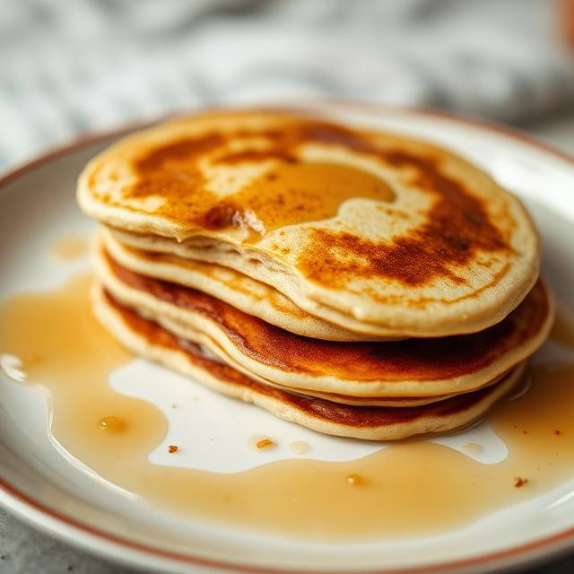

This German pancake recipe is light, fluffy, and easy to make with ingredients you likely already have on hand.
A German pancake (a.k.a. a Dutch baby) is similar to a large Yorkshire pudding. Unlike other types of pancakes, German pancakes are baked in the oven instead of fried on the stove. They also don’t contain leaving ingredients, such as baking powder or baking soda.
Melt the butter in a baking dish, make the batter, pour the batter into the baking dish, and bake the German pancake until golden brown.